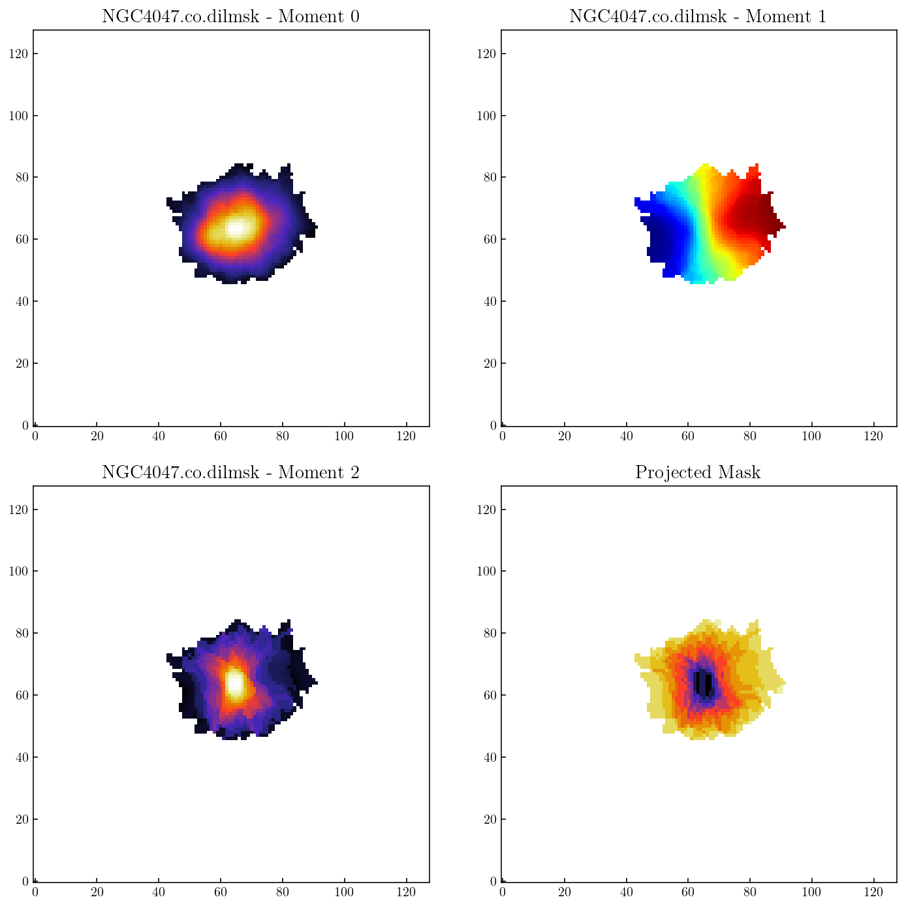
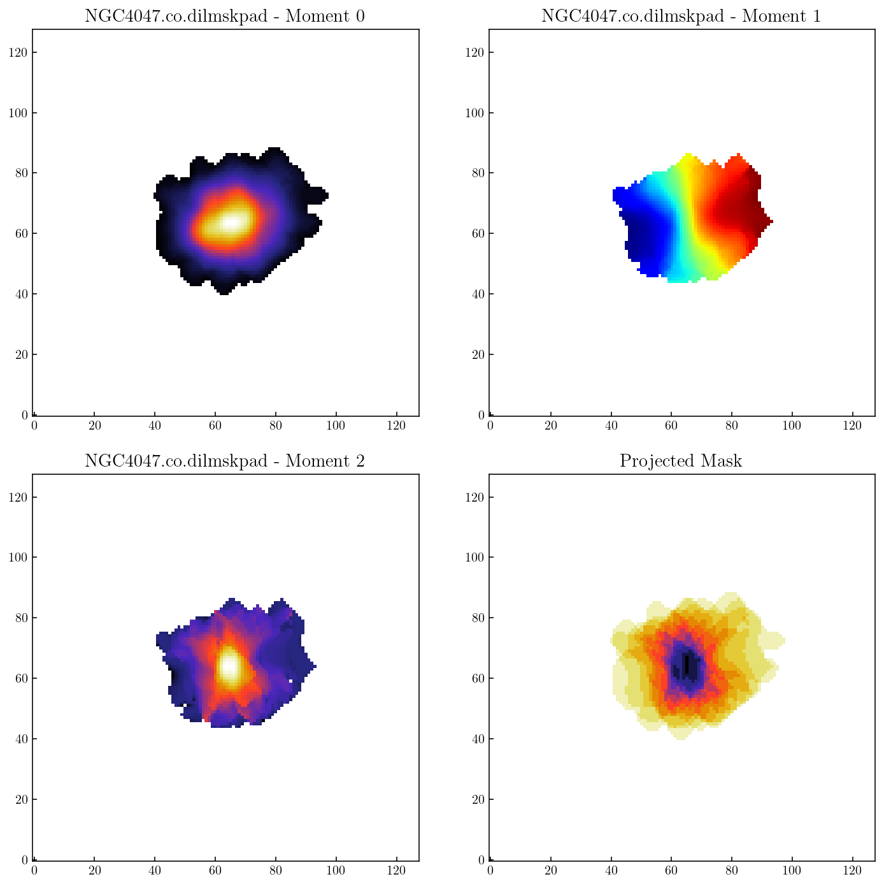
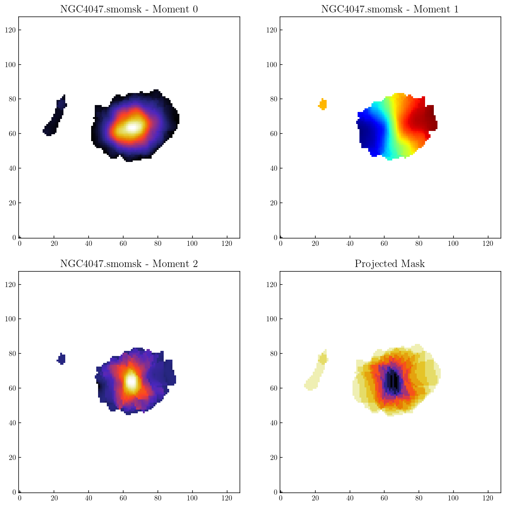
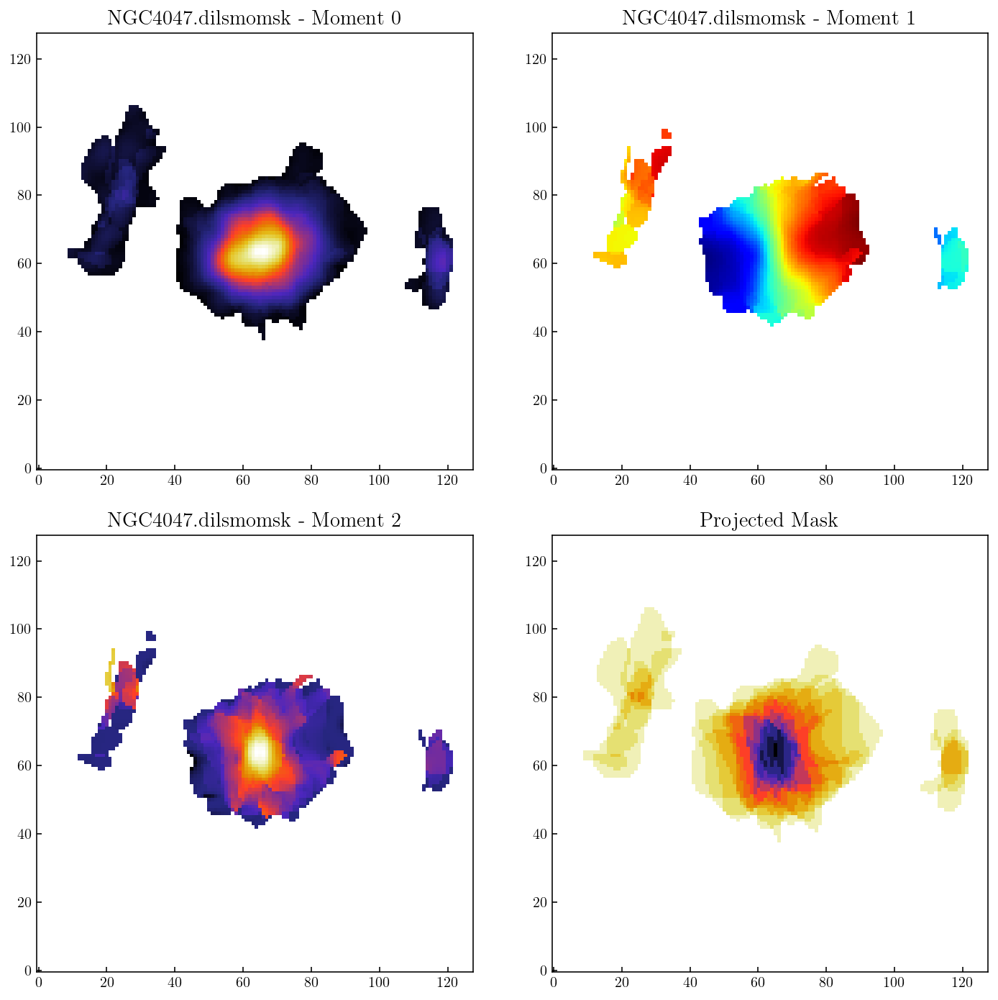
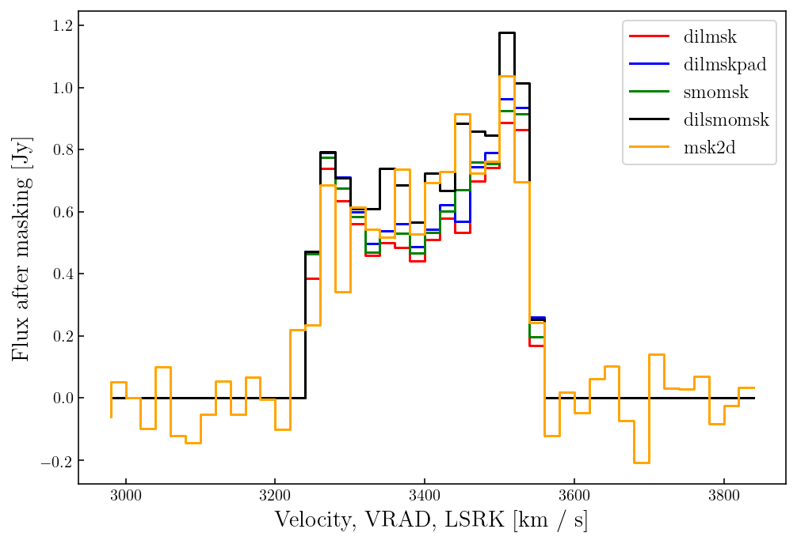

ism3d.xyhelper.maskmoment: derive moment0/moment1 maps from spectral cubes¶
note: This example was adapted from https://github.com/tonywong94/maskmoment, hat tip to T. Wong & H. Wang
Setup¶
We first import essential API functions / modules from ism3d and other libraries
Used ISM3D Functions:
im3d.logger.logger_configim3d.logger.logger_status
[ ]:
nb_dir=_dh[0]
os.chdir(nb_dir+'/../output/n4047')
sys.path.append(nb_dir)
from notebook_setup import *
%matplotlib inline
#%config InlineBackend.figure_format = "png" # ‘png’, ‘retina’, ‘jpeg’, ‘svg’, ‘pdf’.
%reload_ext wurlitzer
%reload_ext memory_profiler
%reload_ext line_profiler
ism3d.logger_config(logfile='ism3d.log',loglevel='DEBUG',logfilelevel='DEBUG',log2term=False)
print(''+ism3d.__version__)
print('working dir: {}\n'.format(os.getcwd()))
[2]:
def quadplot(basename, extmask=None):
fig, ((ax1, ax2), (ax3, ax4)) = plt.subplots(2, 2, figsize=(12,12))
mom0 = fits.getdata(basename+'.mom0.fits.gz')
ax1.imshow(mom0,origin='lower',cmap='CMRmap')
ax1.set_title(basename+' - Moment 0',fontsize='x-large')
mom1 = fits.getdata(basename+'.mom1.fits.gz')
ax2.imshow(mom1,origin='lower',cmap='jet')
ax2.set_title(basename+' - Moment 1',fontsize='x-large')
mom2 = fits.getdata(basename+'.mom2.fits.gz')
ax3.imshow(mom2,origin='lower',cmap='CMRmap')
ax3.set_title(basename+' - Moment 2',fontsize='x-large')
if extmask is None:
mask = np.sum(fits.getdata(basename+'.mask.fits.gz'),axis=0)
else:
mask = np.sum(fits.getdata(extmask),axis=0)
ax4.imshow(mask,origin='lower',cmap='CMRmap_r')
ax4.set_title('Projected Mask',fontsize='x-large')
plt.subplots_adjust(hspace=0.15,wspace=0.15)
plt.show()
return
Example 0: Dilated mask with no smoothing. Expand from 4\(\sigma\) to 2\(\sigma\) contour. Mask regions must span at least 2 beam areas and 2 channels at any pixel.¶
[3]:
img_fits='../../data/n4047/NGC4047.co.smo7msk.fits.gz'
gain_fits='../../data/n4047/NGC4047.co.smo7gain.fits.gz'
maskmoment(img_fits=img_fits,
gain_fits=gain_fits,
snr_hi=4, snr_lo=2, minbeam=2, snr_lo_minch=2,
outname='NGC4047.co.dilmsk',outdir='./')
quadplot('NGC4047.co.dilmsk')
rms_fits=outname='NGC4047.co.dilmsk.ecube.fits.gz'
Output basename is: NGC4047.co.dilmsk
Image cube ../../data/n4047/NGC4047.co.smo7msk.fits.gz:
SpectralCube with shape=(44, 128, 128) and unit=Jy / beam:
n_x: 128 type_x: RA---SIN unit_x: deg range: 180.684759 deg: 180.738161 deg
n_y: 128 type_y: DEC--SIN unit_y: deg range: 48.618414 deg: 48.653691 deg
n_s: 44 type_s: VRAD unit_s: m / s range: 2980000.000 m / s: 3840000.000 m / s
Gain cube ../../data/n4047/NGC4047.co.smo7gain.fits.gz:
SpectralCube with shape=(44, 128, 128):
n_x: 128 type_x: RA---SIN unit_x: deg range: 180.684759 deg: 180.738161 deg
n_y: 128 type_y: DEC--SIN unit_y: deg range: 48.618414 deg: 48.653691 deg
n_s: 44 type_s: VRAD unit_s: m / s range: 2980000.000 m / s: 3840000.000 m / s
Found rms value of 0.0120 Jy / beam
Noise cube:
SpectralCube with shape=(44, 128, 128) and unit=Jy / beam:
n_x: 128 type_x: RA---SIN unit_x: deg range: 180.684759 deg: 180.738161 deg
n_y: 128 type_y: DEC--SIN unit_y: deg range: 48.618414 deg: 48.653691 deg
n_s: 44 type_s: VRAD unit_s: m / s range: 2980000.000 m / s: 3840000.000 m / s
Wrote .//NGC4047.co.dilmsk.ecube.fits.gz
SNR cube:
SpectralCube with shape=(44, 128, 128):
n_x: 128 type_x: RA---SIN unit_x: deg range: 180.684759 deg: 180.738161 deg
n_y: 128 type_y: DEC--SIN unit_y: deg range: 48.618414 deg: 48.653691 deg
n_s: 44 type_s: VRAD unit_s: m / s range: 2980000.000 m / s: 3840000.000 m / s
Minimum area is 111.0 pixels
Found 82 objects with SNR above 2
Wrote .//NGC4047.co.dilmsk.mask.fits.gz
Wrote .//NGC4047.co.dilmsk.flux.csv
Units of cube are Jy / beam
Beam info: Beam: BMAJ=7.000000169508 arcsec BMIN=7.000000169508 arcsec BPA=45.0 deg
Units of mom0 map are K km / s
Wrote .//NGC4047.co.dilmsk.mom0.fits.gz
Wrote .//NGC4047.co.dilmsk.mom1.fits.gz
Wrote .//NGC4047.co.dilmsk.mom2.fits.gz
Wrote .//NGC4047.co.dilmsk.emom0.fits.gz
Wrote .//NGC4047.co.dilmsk.emom1.fits.gz
Wrote .//NGC4047.co.dilmsk.emom2.fits.gz

Example 1: Dilated mask with 2 pixel padding in spatial dimensions. Start at 5\(\sigma\) contour to isolate main galaxy. We speed up execution by using the rms cube generated by Example 0.¶
[4]:
maskmoment(img_fits=img_fits,
rms_fits=rms_fits,
snr_hi=5, snr_lo=2, minbeam=2, nguard=[2,0],
outname='NGC4047.co.dilmskpad',outdir='./')
quadplot('NGC4047.co.dilmskpad')
Output basename is: NGC4047.co.dilmskpad
Image cube ../../data/n4047/NGC4047.co.smo7msk.fits.gz:
SpectralCube with shape=(44, 128, 128) and unit=Jy / beam:
n_x: 128 type_x: RA---SIN unit_x: deg range: 180.684759 deg: 180.738161 deg
n_y: 128 type_y: DEC--SIN unit_y: deg range: 48.618414 deg: 48.653691 deg
n_s: 44 type_s: VRAD unit_s: m / s range: 2980000.000 m / s: 3840000.000 m / s
Noise cube NGC4047.co.dilmsk.ecube.fits.gz:
SpectralCube with shape=(44, 128, 128) and unit=Jy / beam:
n_x: 128 type_x: RA---SIN unit_x: deg range: 180.684759 deg: 180.738161 deg
n_y: 128 type_y: DEC--SIN unit_y: deg range: 48.618414 deg: 48.653691 deg
n_s: 44 type_s: VRAD unit_s: m / s range: 2980000.000 m / s: 3840000.000 m / s
SNR cube:
SpectralCube with shape=(44, 128, 128):
n_x: 128 type_x: RA---SIN unit_x: deg range: 180.684759 deg: 180.738161 deg
n_y: 128 type_y: DEC--SIN unit_y: deg range: 48.618414 deg: 48.653691 deg
n_s: 44 type_s: VRAD unit_s: m / s range: 2980000.000 m / s: 3840000.000 m / s
Minimum area is 111.0 pixels
Found 609 objects with SNR above 2
Wrote .//NGC4047.co.dilmskpad.mask.fits.gz
Wrote .//NGC4047.co.dilmskpad.flux.csv
Units of cube are Jy / beam
Beam info: Beam: BMAJ=7.000000169508 arcsec BMIN=7.000000169508 arcsec BPA=45.0 deg
Units of mom0 map are K km / s
Wrote .//NGC4047.co.dilmskpad.mom0.fits.gz
Wrote .//NGC4047.co.dilmskpad.mom1.fits.gz
Wrote .//NGC4047.co.dilmskpad.mom2.fits.gz
Wrote .//NGC4047.co.dilmskpad.emom0.fits.gz
Wrote .//NGC4047.co.dilmskpad.emom1.fits.gz
Wrote .//NGC4047.co.dilmskpad.emom2.fits.gz

Example 2: Smooth and mask method. Generate a mask using the 3\(\sigma\) contour of a smoothed (to 10”) cube. Mask regions must span at least 2 beam areas.¶
[5]:
maskmoment(img_fits=img_fits,
rms_fits=rms_fits,
snr_hi=3, snr_lo=3, fwhm=10, vsm=None, minbeam=2,
outname='NGC4047.smomsk')
quadplot('NGC4047.smomsk')
Output basename is: NGC4047.smomsk
Image cube ../../data/n4047/NGC4047.co.smo7msk.fits.gz:
SpectralCube with shape=(44, 128, 128) and unit=Jy / beam:
n_x: 128 type_x: RA---SIN unit_x: deg range: 180.684759 deg: 180.738161 deg
n_y: 128 type_y: DEC--SIN unit_y: deg range: 48.618414 deg: 48.653691 deg
n_s: 44 type_s: VRAD unit_s: m / s range: 2980000.000 m / s: 3840000.000 m / s
Noise cube NGC4047.co.dilmsk.ecube.fits.gz:
SpectralCube with shape=(44, 128, 128) and unit=Jy / beam:
n_x: 128 type_x: RA---SIN unit_x: deg range: 180.684759 deg: 180.738161 deg
n_y: 128 type_y: DEC--SIN unit_y: deg range: 48.618414 deg: 48.653691 deg
n_s: 44 type_s: VRAD unit_s: m / s range: 2980000.000 m / s: 3840000.000 m / s
SNR cube:
SpectralCube with shape=(44, 128, 128):
n_x: 128 type_x: RA---SIN unit_x: deg range: 180.684759 deg: 180.738161 deg
n_y: 128 type_y: DEC--SIN unit_y: deg range: 48.618414 deg: 48.653691 deg
n_s: 44 type_s: VRAD unit_s: m / s range: 2980000.000 m / s: 3840000.000 m / s
Convolving to Beam: BMAJ=10.0 arcsec BMIN=10.0 arcsec BPA=0.0 deg
Existing Beam: BMAJ=7.000000169508 arcsec BMIN=7.000000169508 arcsec BPA=45.0 deg
Found rms value of 0.6032
Smoothed SNR cube:
SpectralCube with shape=(44, 128, 128):
n_x: 128 type_x: RA---SIN unit_x: deg range: 180.684759 deg: 180.738161 deg
n_y: 128 type_y: DEC--SIN unit_y: deg range: 48.618414 deg: 48.653691 deg
n_s: 44 type_s: VRAD unit_s: m / s range: 2980000.000 m / s: 3840000.000 m / s
Minimum area is 111.0 pixels
Wrote ./NGC4047.smomsk.mask.fits.gz
Wrote ./NGC4047.smomsk.flux.csv
Units of cube are Jy / beam
Beam info: Beam: BMAJ=7.000000169508 arcsec BMIN=7.000000169508 arcsec BPA=45.0 deg
Units of mom0 map are K km / s
Wrote ./NGC4047.smomsk.mom0.fits.gz
Wrote ./NGC4047.smomsk.mom1.fits.gz
Wrote ./NGC4047.smomsk.mom2.fits.gz
Wrote ./NGC4047.smomsk.emom0.fits.gz
Wrote ./NGC4047.smomsk.emom1.fits.gz
Wrote ./NGC4047.smomsk.emom2.fits.gz

[ ]:
Example 3: Dilated smooth-and-mask. Expand from the 4\(\sigma\) to 2\(\sigma\) contour of the smoothed cube.¶
[7]:
maskmoment(img_fits=img_fits,
rms_fits=rms_fits,
snr_hi=4, snr_lo=2, fwhm=10, vsm=None, minbeam=2,
outname='NGC4047.dilsmomsk', output_2d_mask=True)
quadplot('NGC4047.dilsmomsk')
Output basename is: NGC4047.dilsmomsk
Image cube ../../data/n4047/NGC4047.co.smo7msk.fits.gz:
SpectralCube with shape=(44, 128, 128) and unit=Jy / beam:
n_x: 128 type_x: RA---SIN unit_x: deg range: 180.684759 deg: 180.738161 deg
n_y: 128 type_y: DEC--SIN unit_y: deg range: 48.618414 deg: 48.653691 deg
n_s: 44 type_s: VRAD unit_s: m / s range: 2980000.000 m / s: 3840000.000 m / s
Noise cube NGC4047.co.dilmsk.ecube.fits.gz:
SpectralCube with shape=(44, 128, 128) and unit=Jy / beam:
n_x: 128 type_x: RA---SIN unit_x: deg range: 180.684759 deg: 180.738161 deg
n_y: 128 type_y: DEC--SIN unit_y: deg range: 48.618414 deg: 48.653691 deg
n_s: 44 type_s: VRAD unit_s: m / s range: 2980000.000 m / s: 3840000.000 m / s
SNR cube:
SpectralCube with shape=(44, 128, 128):
n_x: 128 type_x: RA---SIN unit_x: deg range: 180.684759 deg: 180.738161 deg
n_y: 128 type_y: DEC--SIN unit_y: deg range: 48.618414 deg: 48.653691 deg
n_s: 44 type_s: VRAD unit_s: m / s range: 2980000.000 m / s: 3840000.000 m / s
Convolving to Beam: BMAJ=10.0 arcsec BMIN=10.0 arcsec BPA=0.0 deg
Existing Beam: BMAJ=7.000000169508 arcsec BMIN=7.000000169508 arcsec BPA=45.0 deg
Found rms value of 0.6032
Smoothed SNR cube:
SpectralCube with shape=(44, 128, 128):
n_x: 128 type_x: RA---SIN unit_x: deg range: 180.684759 deg: 180.738161 deg
n_y: 128 type_y: DEC--SIN unit_y: deg range: 48.618414 deg: 48.653691 deg
n_s: 44 type_s: VRAD unit_s: m / s range: 2980000.000 m / s: 3840000.000 m / s
Minimum area is 111.0 pixels
Found 265 objects with SNR above 2
Wrote ./NGC4047.dilsmomsk.mask.fits.gz
Wrote ./NGC4047.dilsmomsk.mask2d.fits.gz
Wrote ./NGC4047.dilsmomsk.flux.csv
Units of cube are Jy / beam
Beam info: Beam: BMAJ=7.000000169508 arcsec BMIN=7.000000169508 arcsec BPA=45.0 deg
Units of mom0 map are K km / s
Wrote ./NGC4047.dilsmomsk.mom0.fits.gz
Wrote ./NGC4047.dilsmomsk.mom1.fits.gz
Wrote ./NGC4047.dilsmomsk.mom2.fits.gz
Wrote ./NGC4047.dilsmomsk.emom0.fits.gz
Wrote ./NGC4047.dilsmomsk.emom1.fits.gz
Wrote ./NGC4047.dilsmomsk.emom2.fits.gz

Example 4: Apply an existing mask. Here we apply the 2D version of the mask derived in Example 3. Since this includes a lot of noise the results are not as good.¶
[ ]:
maskmoment(img_fits=img_fits
rms_fits=rms_fits
mask_fits='NGC4047.dilsmomsk.mask2d.fits.gz',
outname='NGC4047.msk2d')
quadplot('NGC4047.msk2d', extmask='NGC4047.dilsmomsk.mask2d.fits.gz')
Compare integrated spectra from the 5 masks.¶
[8]:
ex0 = Table.read('NGC4047.dilmsk.flux.csv', format='ascii.ecsv')
ex1 = Table.read('NGC4047.dilmskpad.flux.csv', format='ascii.ecsv')
ex2 = Table.read('NGC4047.smomsk.flux.csv', format='ascii.ecsv')
ex3 = Table.read('NGC4047.dilsmomsk.flux.csv', format='ascii.ecsv')
ex4 = Table.read('NGC4047.msk2d.flux.csv', format='ascii.ecsv')
figname='spec1d_comparison.pdf'
fig = plt.figure(figsize=[8,5.5])
plt.step(ex0['Velocity'],ex0['Flux'],color='r',label='dilmsk')
plt.step(ex1['Velocity'],ex1['Flux'],color='b',label='dilmskpad')
plt.step(ex2['Velocity'],ex2['Flux'],color='g',label='smomsk')
plt.step(ex3['Velocity'],ex3['Flux'],color='k',label='dilsmomsk')
plt.step(ex4['Velocity'],ex4['Flux'],color='orange',label='msk2d')
plt.legend(fontsize='large')
plt.xlabel(ex0['Velocity'].description+' ['+str(ex0['Velocity'].unit)+']',fontsize='x-large')
plt.ylabel(ex0['Flux'].description+' ['+str(ex0['Flux'].unit)+']',fontsize='x-large')
prepdir(figname)
fig.savefig(figname)

[ ]: